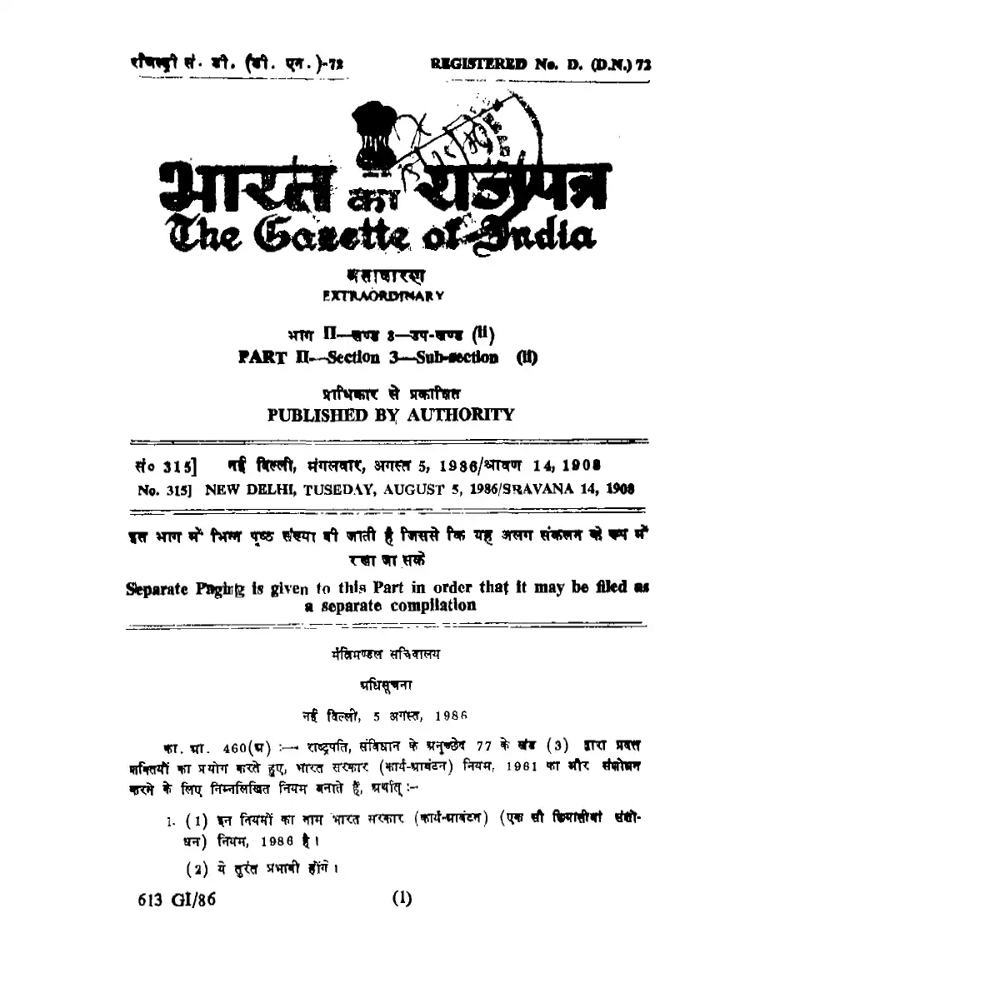
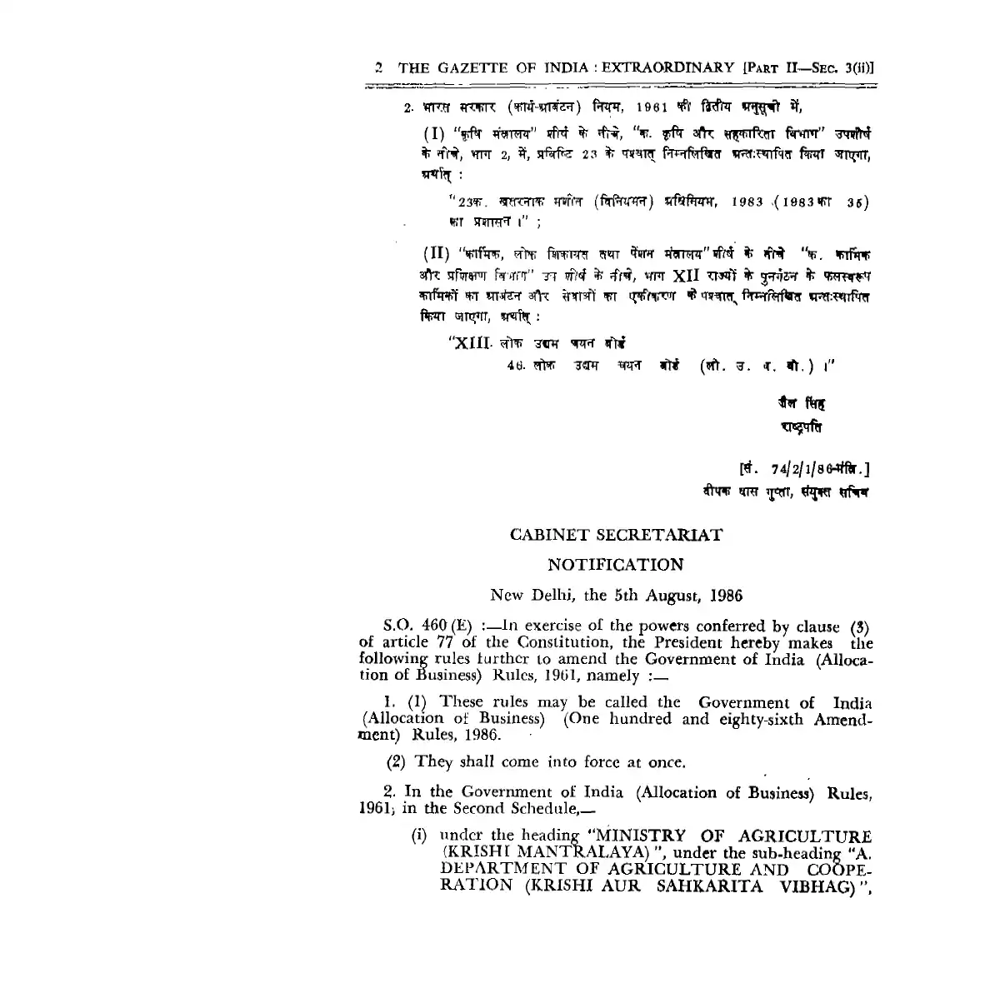
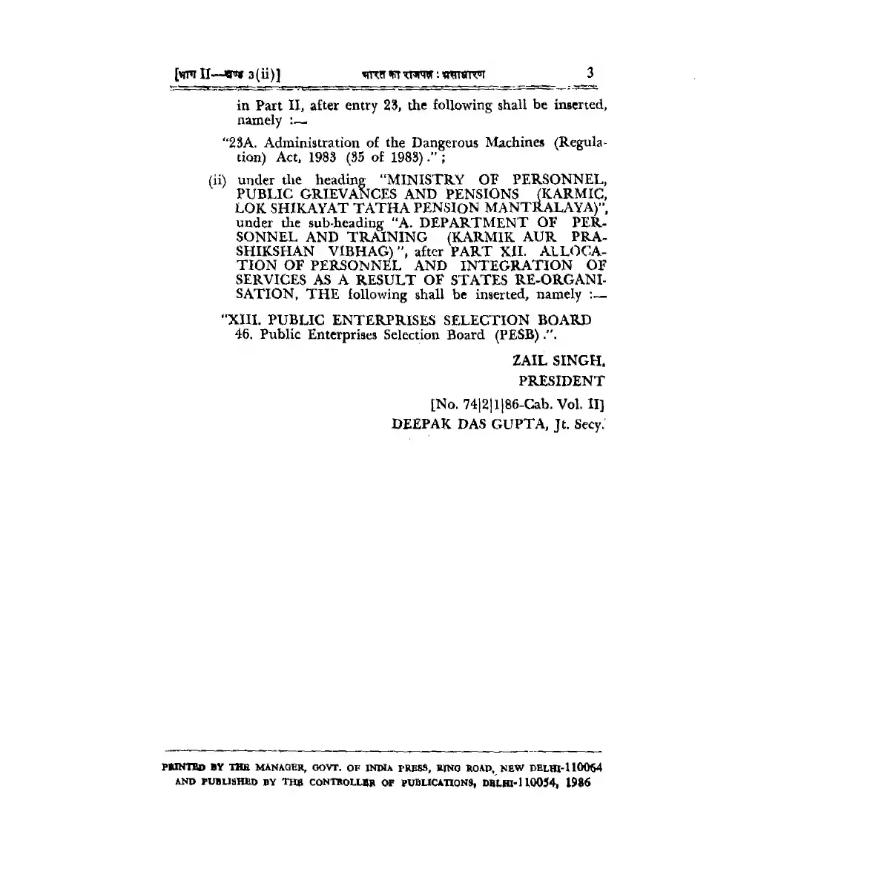

Amendment #186 (S.O. 460(E), 1986)
2 changes: 0 to the First Schedule, 2 to the Second Schedule. 2 applied
The order, page by page
Page 1 of 4

Page 2 of 4

1after Schedule 2 › MINISTRY OF AGRICULTURE › DEPARTMENT OF AGRICULTURE AND COOPERATION › Part II › entry 23
- 23A. Administration of the Dangerous Machines (Regulation) Act, 1983 (35 of 1983).
applied at schedule 2 › ministry MINISTRY OF AGRICULTURE › department A › part II › entry 23A in the Rules after #186
Page 3 of 4

2after Schedule 2 › MINISTRY OF PERSONNEL, PUBLIC GRIEVANCES AND PENSIONS › DEPARTMENT OF PERSONNEL AND TRAINING › PART XII. ALLOCATION OF PERSONNEL AND INTEGRATION OF SERVICES AS A RESULT OF STATES RE-ORGANISATION
- XIII. PUBLIC ENTERPRISES SELECTION BOARD
- 46. Public Enterprises Selection Board (PESB) .
applied at schedule 2 › ministry Ministry of Personnel Public Grievances and Pen sions (Karmik, lok Shikayat tatha Pension… in the Rules after #186
Page 4 of 4
How this document was read
From the Government of India (Allocation of Business) Rules, 1961 and their amendments, as published by the Cabinet Secretariat (cabsec.gov.in), read by orgpedia. The readings of the older scanned gazettes have known gaps.